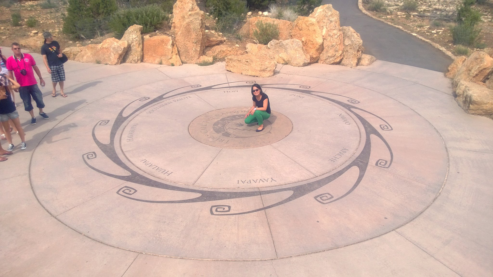
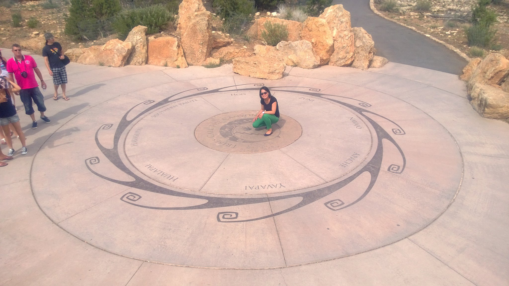
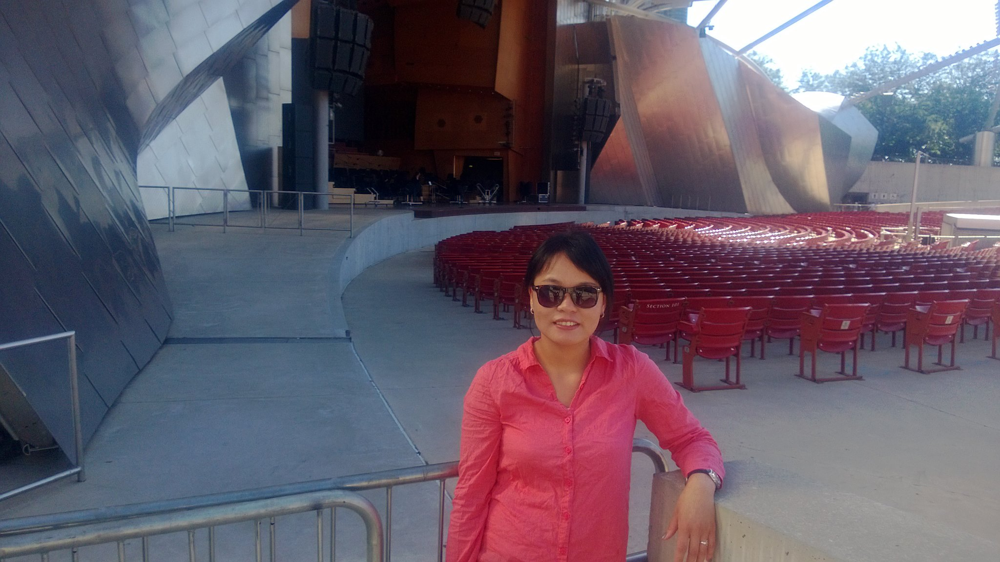
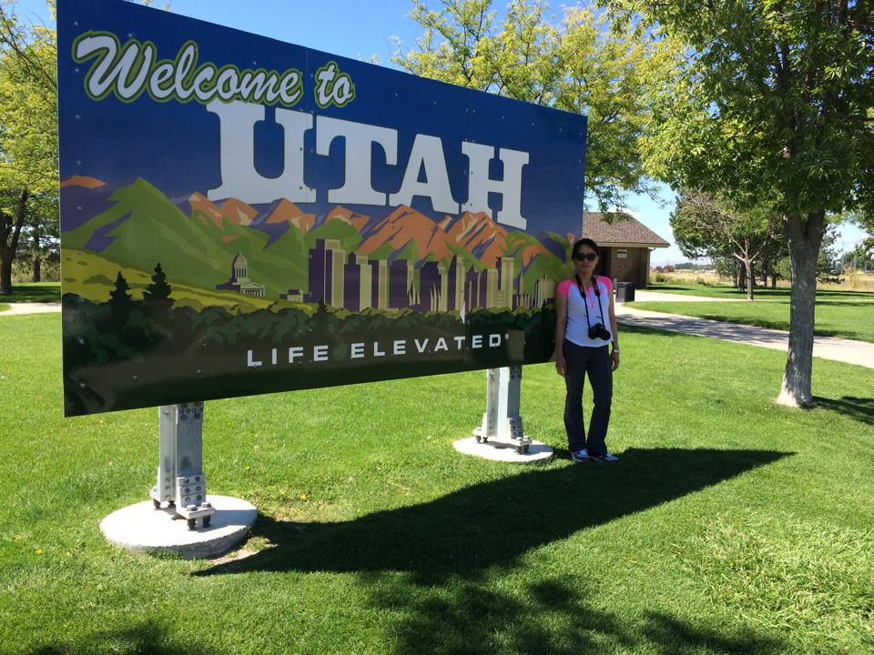
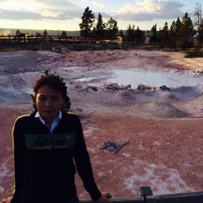
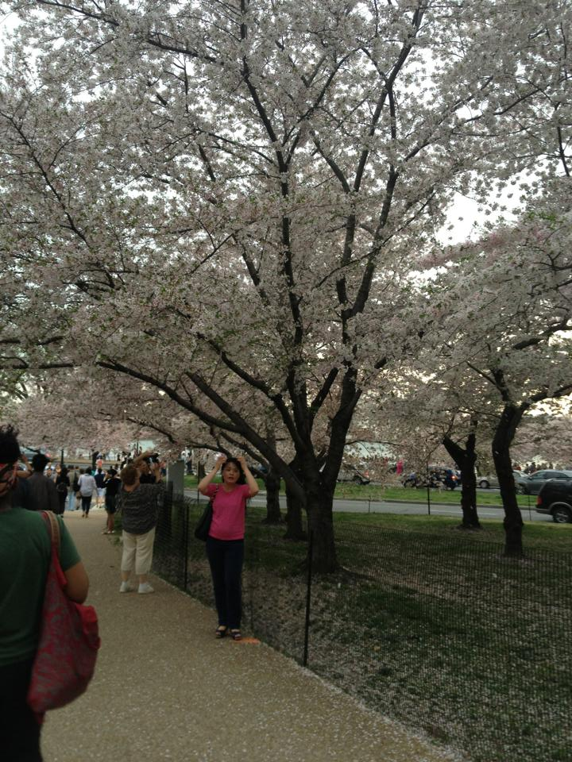
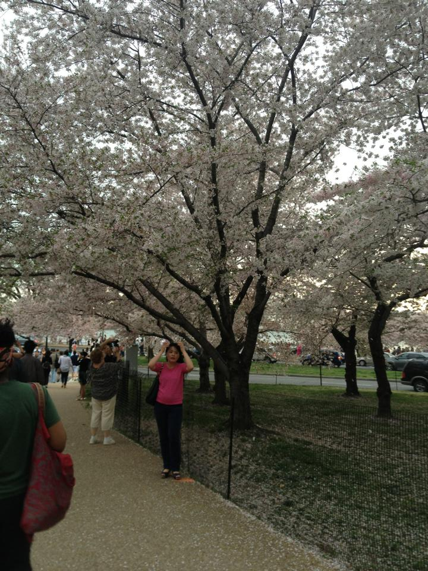

My Hobby is travelling
I like to travel when i was a kid i used to went my grandmother's house in countryside and she was history teacher and all the time told me stories and one day ther was student exchange people came to my grandmother's house and there were come many country and the trying to talk to me but at that time i can't speak english and they are always show me pictures and that's how my travel start.
I travelled many country and i would like to talking about my United states travel . I went almost 48 states now few of states left maybe when after next year i want to travel other states.
Great Sand Dunes National Park
 
It was so beautiful . Great Sand Dunes National Park and Preserve is in southern Colorado. It’s known for huge dunes like the towering Star Dune, and for the seasonal Medano Creek and beach created at the base of the dunes. The backcountry Medano Pass Primitive Road winds through a canyon toward the Sangre de Cristo mountains. Trails lead to forests, wetlands and alpine lakes like Medano Lake, which is home to trout and tundra wildlife.

It was so beautiful . Great Sand Dunes National Park and Preserve is in southern Colorado. It’s known for huge dunes like the towering Star Dune, and for the seasonal Medano Creek and beach created at the base of the dunes. The backcountry Medano Pass Primitive Road winds through a canyon toward the Sangre de Cristo mountains. Trails lead to forests, wetlands and alpine lakes like Medano Lake, which is home to trout and tundra wildlife.
Millennium Park

Millennium Park is a public park located in the Loop community area of Chicago in Illinois operated by the Chicago Department of Cultural Affairs . Millenium park was awesome. You have to have see it.
-
Yellowstone Park Utah


When I went there there was smell like burning some chemical elements and amazing .Yellowstone is America's first national park, established in 1872--though people have been exploring its beauty for over 11,000 years.
Why is it called Yellowstone?
Instead, the name was attributed as early as 1805 to Native Americans who were referring to yellow sandstones along the banks of the Yellowstone River in eastern Montana, several hundred miles downstream and northeast of the Park.
The first Computer at Harvard University
 

IBM Automatic Sequence Controlled Calculator
The IBM Automatic Sequence Controlled Calculator (ASCC), called Mark I by Harvard University's staff, was a general purpose electromechanical computer that was used in the war effort during the last part of World War II. One of the first programs to run on the Mark I was initiated on 29 March 1944 by John von Neumann.